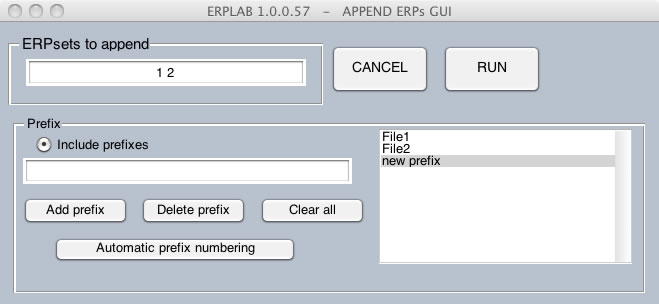

To add the bins from one or more ERPsets onto the end of another ERPset, you can select ERPLAB > ERP Operations > Append ERPsets. The window for controlling this procedure is shown in the screenshot below. There are two ways to indicate which ERPsets should be appended together (which are controlled by the options on the left side of the window shown in the screenshot below). First, you can either tell it to append some of the ERPsets that are in the ERPsets menu by specifying the indexes from the ERPsets menu (e.g., specifying "1:3" to append the first 3 ERPsets in the ERPsets menu). Second, you can provide a list of filenames if the ERPsets have been stored on disk (as in the screenshot shown below). For this latter option, the filenames are stored in a text file so that you don't have to type them in every time. You create this text file by adding the files to the list and then clicking on Save List as.

When you append multiple ERPsets together, the bins from the first ERPset retain their original numbers (e.g., bin 1, bin 2, etc.), and the bins from the additional ERPsets are added onto the end. For example, if the first ERPset has 3 bins and the second ERPset has 2 bins, bins 1-3 in the new ERPset will be bins 1-3 from the first ERPset, and bins 4-5 in the new ERPset will be bins 1-2 from the second ERPset. The newly created ERPset will then become the active ERPset.
Note that, although you can have different numbers of bins in the ERPsets that are being combined, factors such as the sampling rate and epoch must be identical for the original ERPsets.
In many cases, the bins in the ERPsets being appended have identical names (e.g., the name of bin 1 in the first ERPset is the same as the name of bin 2 in the second ERPset). The Append ERPsets routine has a "prefix" option that can disambiguate these bins in the newly created ERPset (controlled by the options on the right side of the window shown in the screenshot above). The simplest option is to check the Use ERPnames option. If you do this, each bin description is preceded by the name of the ERPset from which it was taken.
Another possibility is to create custom prefixes using the prefix window. For example, if you are combining data from two sessions, the first prefix could be"Session 1" and the second prefix could be"Session 2". Each bin label in the newly created ERPset would thenbe preceded by "Session 1: " for the bins corresponding to the first ERPset and by "Session 2: " for the bins corresponding to the second ERPset.
| Table of Contents | Averaging Across ERPsets>> |